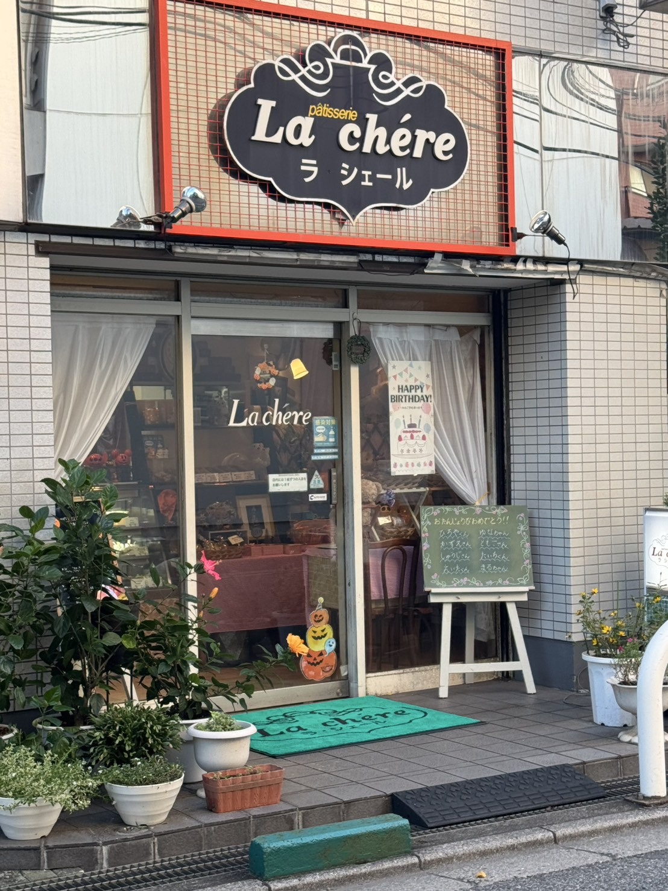

店の名前 La chere ラ シェール
Category: ケーキ
おいしいと評判のケーキ屋さんです。一番人気はモンブラン。少しボリューム小さめですが、価格も高額すぎず、味は濃厚です。
住所：千葉県習志野市谷津1丁目11-11
TEL：047-472-7694
営業時間：10:00 - 20:00
定休日：火曜日

店の名前 ベトナム料理専門店 フォーゴン
Category: ベトナム料理
こ洒落たベトナム料理家です。一番人気はブンボーフェ。
魚介出汁の効いたうどんみたいな感じです。
揚げ春巻きも海老がプリプリでおいしいです。
シーフードチャーハンもパラパラでおいしいです。
お料理も、お酒もお手頃価格です。ランチはもっとお得でコスパ最高です。
住所：千葉県習志野市谷津1-12-5 新津田沼ビルディング 2F
TEL：047-774-0128
営業時間：11:00~15:00( L.O 14:30)
17:00~22:30(L.O 22:00)
定休日：なし